Imports and deterministic example data
from __future__ import annotations
import importlib.util
import os
import tempfile
from pathlib import Path
import numpy as np
import pandas as pd
from plotnado import GenomicFigure, ThemeThis gallery is rendered by Quarto from the code shown on this page. The helper data below keeps the examples deterministic; each gallery entry then shows the key PlotNado calls followed by the figure produced by the current package version.
REGION = "chr1:1,010,000-1,080,000"
REPO_ROOT = Path.cwd()
TEST_DATA_DIR = REPO_ROOT / "tests" / "data"
QUANTNADO_FIXTURE_DIR = TEST_DATA_DIR / "quantnado"
def has_module(module_name: str) -> bool:
return importlib.util.find_spec(module_name) is not None
def unavailable_example_figure(example_name: str, requirement: str):
import matplotlib.pyplot as plt
fig, ax = plt.subplots(figsize=(9, 1.8))
ax.axis("off")
ax.text(
0.5,
0.5,
f"{example_name} requires: {requirement}",
ha="center",
va="center",
fontsize=11,
)
plt.close(fig)
return fig
BLUEPRINT_BIGWIGS = {
"T12-15 plasma cell RNA": "http://ftp.ebi.ac.uk/pub/databases/blueprint/data/homo_sapiens/GRCh38/tonsil/T12-15/plasma_cell/RNA-Seq/IDIBAPS/T12-15-PC.signal.star_grape2_crg.GRCh38.20150815.bw",
"T12-16 plasma cell RNA": "http://ftp.ebi.ac.uk/pub/databases/blueprint/data/homo_sapiens/GRCh38/tonsil/T12-16/plasma_cell/RNA-Seq/IDIBAPS/T12-16-PC.signal.star_grape2_crg.GRCh38.20150815.bw",
}
BLUEPRINT_REGION = "chr1:155,190,000-155,220,000"
def cache_bigwig_crop(label: str, url: str, cache_dir: Path) -> Path:
import pybigtools
from plotnado.tracks import GenomicRegion
from plotnado.tracks.bigwig import BigWigTrack
cache_dir.mkdir(parents=True, exist_ok=True)
cache_path = cache_dir / f"{label.lower().replace(' ', '_').replace('-', '_')}.bw"
if cache_path.exists():
return cache_path
region = GenomicRegion(chromosome="chr1", start=155_190_000, end=155_220_000)
data = BigWigTrack(data=url).fetch_data(region)
if data.empty:
raise ValueError(f"No Blueprint signal fetched for {label} in {BLUEPRINT_REGION}")
records = [
("chr1", int(row.start), int(row.end), float(row.value))
for row in data.itertuples(index=False)
]
pybigtools.open(str(cache_path), "w").write({"chr1": 155_220_000}, records)
return cache_path
def synthetic_signal(
start: int = 1_000_000,
end: int = 1_100_000,
step: int = 1_000,
phase: float = 0.0,
scale: float = 1.0,
) -> pd.DataFrame:
bins = np.arange(start, end, step)
values = scale * (5.0 + 2.0 * np.sin(np.linspace(phase, 6 * np.pi + phase, bins.shape[0])))
return pd.DataFrame({"chrom": "chr1", "start": bins, "end": bins + step, "value": values})
def review_signal(scale: float, phase: float = 0.0) -> pd.DataFrame:
bins = np.arange(1_000_000, 1_120_000, 1_000)
values = scale * (1.2 + np.sin(np.linspace(phase, 6 + phase, bins.shape[0])))
return pd.DataFrame({"chrom": "chr1", "start": bins, "end": bins + 1_000, "value": values})
def style_signal(style_shift: float) -> pd.DataFrame:
bins = np.arange(1_000_000, 1_090_000, 1_000)
values = 5 + 2.4 * np.sin(np.linspace(style_shift, 7 + style_shift, bins.shape[0]))
return pd.DataFrame({"chrom": "chr1", "start": bins, "end": bins + 1_000, "value": values})
def bed_intervals() -> pd.DataFrame:
return pd.DataFrame(
{
"chrom": ["chr1", "chr1", "chr1", "chr1"],
"start": [1_008_000, 1_020_000, 1_050_000, 1_066_000],
"end": [1_014_000, 1_032_000, 1_061_000, 1_074_000],
"name": ["a", "b", "c", "d"],
}
)
def narrowpeaks() -> pd.DataFrame:
return pd.DataFrame(
{
"chrom": ["chr1", "chr1", "chr1"],
"start": [1_012_000, 1_038_000, 1_060_000],
"end": [1_018_000, 1_047_000, 1_070_000],
"name": ["np1", "np2", "np3"],
"score": [300, 700, 500],
"strand": [".", ".", "."],
"signalValue": [12.0, 48.0, 30.0],
"pValue": [5.2, 12.3, 8.1],
"qValue": [4.1, 10.0, 6.2],
"peak": [1200, 1800, 2200],
}
)
def link_df() -> pd.DataFrame:
return pd.DataFrame(
{
"chrom1": ["chr1", "chr1", "chr1"],
"start1": [1_010_000, 1_022_000, 1_042_000],
"end1": [1_012_000, 1_024_000, 1_045_000],
"chrom2": ["chr1", "chr1", "chr1"],
"start2": [1_035_000, 1_054_000, 1_072_000],
"end2": [1_037_000, 1_056_000, 1_074_000],
"score": [2.2, 6.5, 9.8],
}
)
def dense_gene_annotations() -> pd.DataFrame:
records = []
starts = [1_010_000, 1_013_500, 1_017_000, 1_020_500, 1_024_000, 1_028_000, 1_031_500]
lengths = [6_000, 5_500, 6_300, 5_200, 5_800, 5_400, 6_100]
for index, (start, length) in enumerate(zip(starts, lengths), start=1):
records.append(
{
"chrom": "chr1",
"start": start,
"end": start + length,
"geneid": f"GENE_LONG_NAME_GOES_ON_FOR_A_WHILE_{index}",
"strand": "+" if index % 2 else "-",
"block_count": 3,
"block_starts": [0, int(length * 0.42), int(length * 0.78)],
"block_sizes": [int(length * 0.16), int(length * 0.12), int(length * 0.18)],
}
)
return pd.DataFrame.from_records(records)| Track / alias | Coverage level | Gallery entry |
|---|---|---|
scalebar |
Live rendered | Basic figure, Quickstart first plot |
axis |
Live rendered | Basic figure, Links, hline, and vline |
genes |
Live rendered | Basic figure, Gene label strategies |
bigwig |
Live rendered | BigWig styles |
bed |
Live rendered | BED and narrowPeak |
narrowpeak |
Live rendered | BED and narrowPeak |
links |
Live rendered | Links, hline, and vline |
hline |
Live rendered | Links, hline, and vline |
vline |
Live rendered | Links, hline, and vline |
bigwig_collection |
Live rendered when remote examples are enabled | BigWig collection and diff |
bigwig_diff |
Live rendered when remote examples are enabled | BigWig collection and diff |
cooler |
Live rendered when optional dependencies are installed | Cooler and cooler_average |
capcruncher |
Live rendered when optional dependencies are installed | CapCruncher viewpoint matrix |
quantnado_* |
Live rendered when optional dependencies are installed | QuantNado tracks |
highlight |
Live rendered | Overlay, autoscale, and highlight |
overlay |
Live rendered | Overlay, autoscale, and highlight |
Minimal scale bar, axis, genes, and one in-memory signal track.
Autocolor, highlights, interval tracks, grouped autoscaling, and reference lines in one figure.
fig = GenomicFigure(width=12, track_height=1.3)
fig.autocolor("tab10")
fig.highlight("chr1:1,030,000-1,045,000")
fig.highlight_style(color="#f6d55c", alpha=0.2)
fig.scalebar(position="right")
fig.axis(num_ticks=5)
fig.genes("hg38", title="Genes")
fig.bed(bed_intervals(), title="Intervals", display="expanded", show_labels=True)
fig.bigwig(review_signal(4.0), title="Control", style="fill", autoscale_group="signal")
fig.bigwig(review_signal(5.2, phase=0.8), title="Treatment", style="fill", autoscale_group="signal")
fig.bigwig(review_signal(3.0, phase=1.3), title="Input", style="fragment")
fig.vline(1_060_000, color="#333333", linewidth=1.0)
fig.hline(0.0, color="#666666", linewidth=0.6)
fig.plot("chr1:1,000,000-1,110,000")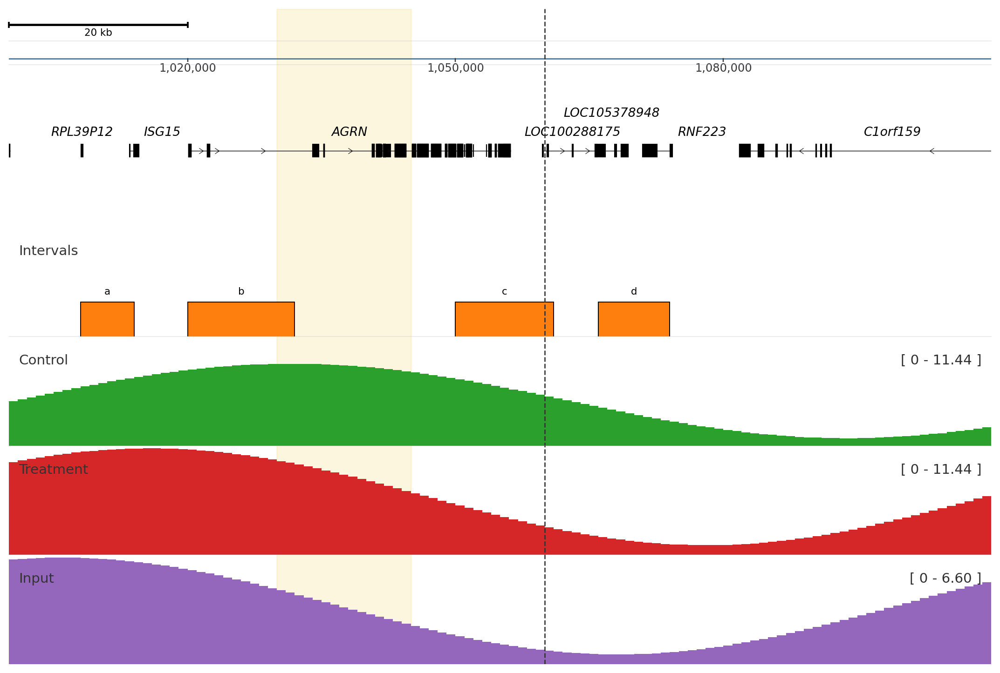
The minimal first plot used in the quickstart flow.
Use add_track(...) when track names come from config, CLI inputs, or other runtime values.
fig = GenomicFigure().autocolor("Set2")
fig.add_track("scalebar")
fig.add_track("axis")
fig.add_track("bigwig", data=synthetic_signal(phase=0.0), title="Replicate A", alpha=0.7)
fig.add_track("bigwig", data=synthetic_signal(phase=0.8), title="Replicate B", alpha=0.7)
fig.plot("chr1:1,005,000-1,070,000")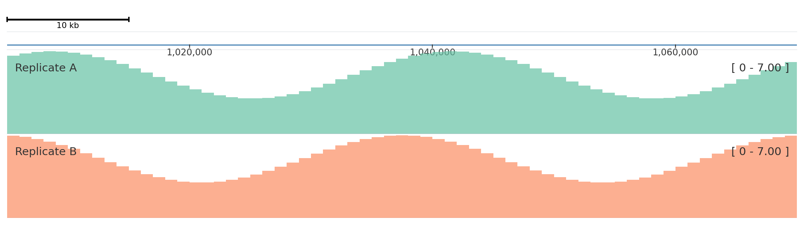
Compare fill, fragment, scatter, and std BigWig render modes.
fig = GenomicFigure(track_height=1.25)
fig.scalebar()
fig.bigwig(style_signal(0.0), title="fill", style="fill", color="#1f77b4")
fig.bigwig(style_signal(0.8), title="fragment", style="fragment", color="#d62728")
fig.bigwig(style_signal(1.6), title="scatter", style="scatter", color="#2ca02c", scatter_point_size=10)
fig.bigwig(style_signal(2.4), title="std", style="std", color="#9467bd")
fig.plot(REGION)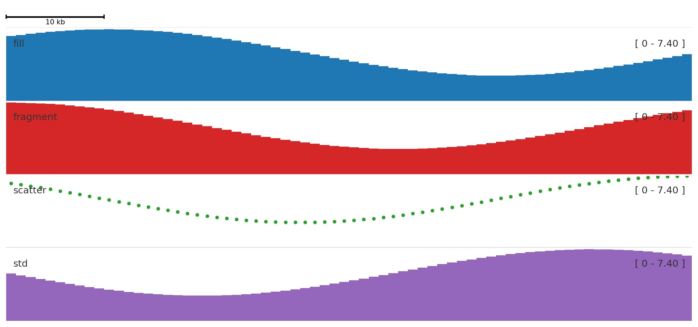
Stack BED intervals and color narrowPeak intervals by a score-like field.
fig = GenomicFigure(track_height=1.25)
fig.scalebar()
fig.axis()
fig.bed(bed_intervals(), title="BED intervals", display="expanded", show_labels=True)
fig.narrowpeak(
narrowpeaks(),
title="narrowPeak",
color_by="signalValue",
cmap="Oranges",
show_labels=True,
show_summit=True,
)
fig.plot("chr1:1,005,000-1,078,000")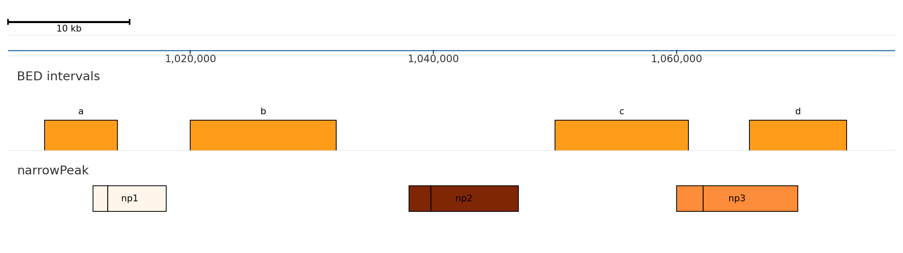
Draw BEDPE-style links with horizontal and vertical annotation lines.
This remote-backed example is opt-in for docs builds because it streams public Blueprint BigWig data. Set PLOTNADO_RENDER_REMOTE_EXAMPLES=1 to render it live.
if os.environ.get("PLOTNADO_RENDER_REMOTE_EXAMPLES") == "1":
labels = list(BLUEPRINT_BIGWIGS.keys())
with tempfile.TemporaryDirectory(prefix="plotnado-blueprint-") as tmpdir:
files = [
str(cache_bigwig_crop(label, url, Path(tmpdir)))
for label, url in BLUEPRINT_BIGWIGS.items()
]
fig = GenomicFigure(track_height=1.15)
fig.axis()
fig.scalebar()
fig.bigwig_collection(
files,
title="Blueprint plasma-cell RNA collection",
labels=labels,
colors=["#d55e00", "#0072b2"],
alpha=0.75,
)
fig.bigwig_diff(
files[0],
files[1],
title="T12-15 minus T12-16",
positive_color="#b22222",
negative_color="#1f5aa6",
bar_alpha=0.5,
)
output = fig.plot(BLUEPRINT_REGION)
else:
output = unavailable_example_figure(
"BigWig collection/diff example",
"PLOTNADO_RENDER_REMOTE_EXAMPLES=1",
)
output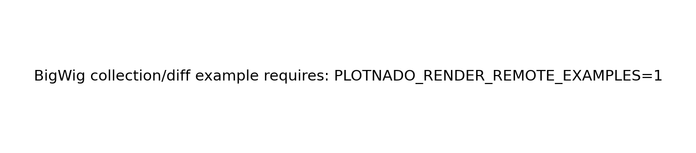
Synchronize ordinary signal tracks and an overlay panel with one autoscale_group.
fig = GenomicFigure(track_height=1.25)
fig.autoscale(True)
fig.highlight("chr1:1,032,000-1,046,000")
fig.highlight_style(color="#ffdd57", alpha=0.22)
fig.axis()
fig.bigwig(review_signal(2.0), title="Group A", autoscale_group="g1", style="fill", color="#1f77b4")
fig.bigwig(review_signal(10.0, 1.2), title="Group B", autoscale_group="g1", style="fill", color="#d62728")
fig.overlay(
[review_signal(4.2, 0.9), review_signal(3.5, 1.5)],
title="Overlay",
autoscale_group="g1",
colors=["#2ca02c", "#9467bd"],
alpha=0.55,
)
fig.plot("chr1:1,005,000-1,085,000")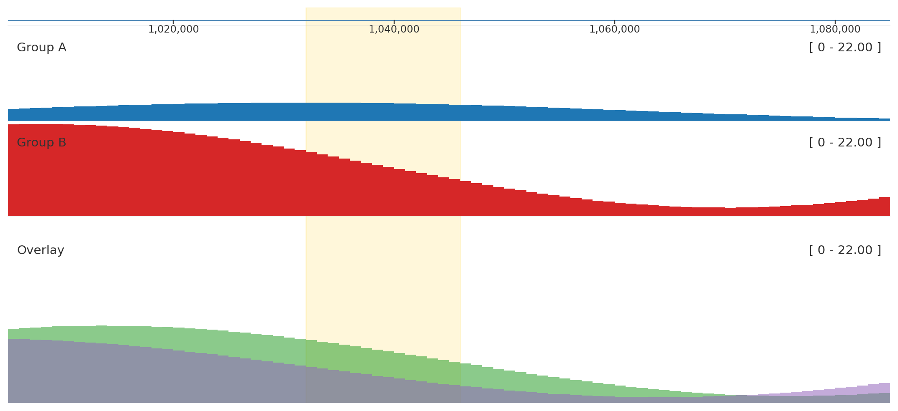
Apply the publication theme and configure label and scale placement.
fig = GenomicFigure(theme=Theme.publication())
fig.scalebar(plot_scale=True, scale_size=10)
fig.axis(num_ticks=4)
fig.bigwig(
synthetic_signal(end=1_090_000),
title="Publication theme",
color="#2c7fb8",
label_box_enabled=True,
label_box_alpha=0.85,
title_location="left",
scale_location="right",
)
fig.plot(REGION)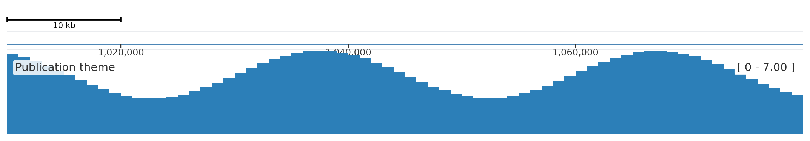
The same figure definition can be persisted and loaded again.
with tempfile.TemporaryDirectory() as tmpdir:
toml_path = Path(tmpdir) / "theme_labels.toml"
fig = GenomicFigure(theme=Theme.publication())
fig.scalebar(plot_scale=True, scale_size=10)
fig.axis(num_ticks=4)
fig.genes("hg38", title="Genes", title_location="left")
fig.to_toml(str(toml_path))
loaded = GenomicFigure.from_toml(str(toml_path))
output = loaded.plot(REGION)
output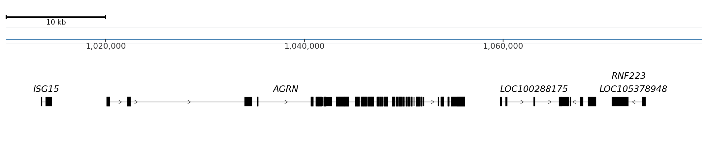
Compare staggered labels, suppressed labels, and automatic row expansion.
genes_df = dense_gene_annotations()
fig = GenomicFigure(width=12, track_height=1.2)
fig.scalebar()
fig.axis()
fig.genes(
data=genes_df,
title="Method: Staggered labels + connectors",
display="collapsed",
label_overlap_strategy="stagger",
label_max_chars=120,
)
fig.genes(
data=genes_df,
title="Method: Suppress overlaps (offset labels)",
display="collapsed",
label_overlap_strategy="suppress",
label_max_chars=120,
)
fig.genes(
data=genes_df,
title="Method: Auto-expand rows + suppress overlaps",
display="collapsed",
label_overlap_strategy="auto_expand",
max_number_of_rows=6,
label_max_chars=120,
)
fig.plot("chr1:1,006,000-1,040,000")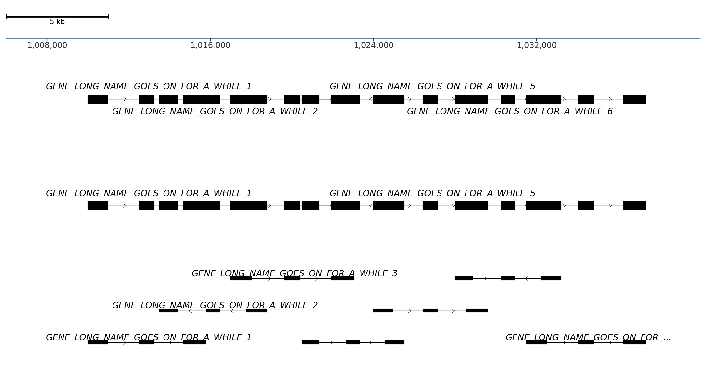
Use the checked-in cooler fixture for a direct matrix view and a simple averaged view.
cooler_path = TEST_DATA_DIR / "hg19.GM12878-MboI.matrix.2000kb.cool"
if has_module("cooler") and cooler_path.exists():
fig = GenomicFigure(track_height=2.1)
fig.axis()
fig.cooler(
str(cooler_path),
title="GM12878 2 Mb cooler",
balance=False,
cmap="YlOrRd",
max_value=60,
)
fig.cooler_average(
[str(cooler_path), str(cooler_path)],
title="Cooler average (same file twice)",
balance=False,
cmap="viridis",
max_value=60,
)
output = fig.plot("chr1:0-10,000,000")
else:
output = unavailable_example_figure("Cooler example", "cooler")
output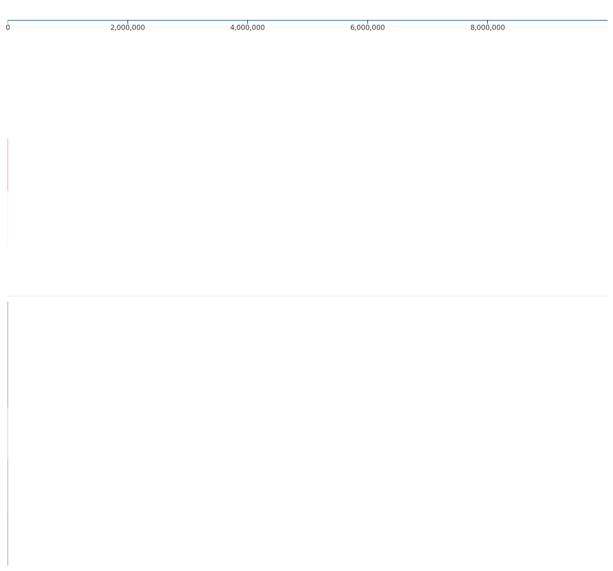
Resolve a CapCruncher viewpoint inside the checked-in HDF5 fixture.
capcruncher_path = TEST_DATA_DIR / "capcruncher" / "SAMPLE-A_REP1.hdf5"
if has_module("capcruncher") and capcruncher_path.exists():
fig = GenomicFigure(track_height=2.4)
fig.axis()
fig.capcruncher(
str(capcruncher_path),
title="CapCruncher viewpoint Slc25A37",
viewpoint="Slc25A37",
balance=False,
cmap="magma",
)
output = fig.plot("chr14:69,878,303-69,879,094")
else:
output = unavailable_example_figure("CapCruncher example", "capcruncher")
output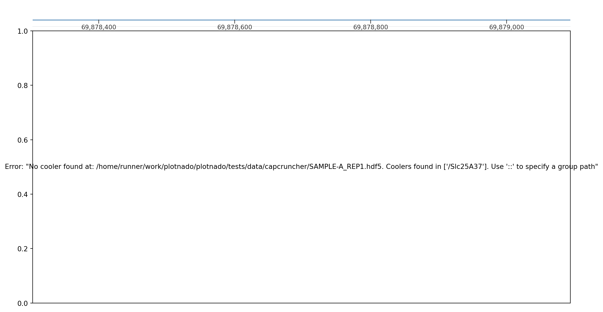
Render local on-disk QuantNado ATAC and RNA fixtures.
atac_path = QUANTNADO_FIXTURE_DIR / "atac_chr22.zarr"
rna_path = QUANTNADO_FIXTURE_DIR / "rna_chr22.zarr"
if has_module("quantnado") and atac_path.exists() and rna_path.exists():
fig = GenomicFigure(track_height=1.2)
fig.axis()
fig.quantnado_coverage(
"atac",
dataset_path=str(atac_path),
title="ATAC coverage",
color="#1f78b4",
fill=True,
)
fig.quantnado_stranded_coverage(
"rna",
dataset_path=str(rna_path),
title="RNA stranded coverage",
color="#d7301f",
reverse_color="#4575b4",
)
output = fig.plot("chr22:10,520,211-10,520,711")
else:
output = unavailable_example_figure("QuantNado signal example", "quantnado")
output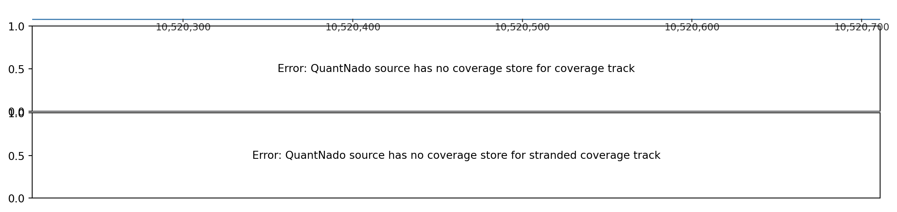
Render methylation percentages from a local QuantNado fixture.
meth_path = QUANTNADO_FIXTURE_DIR / "meth_chr22.zarr"
if has_module("quantnado") and meth_path.exists():
fig = GenomicFigure(track_height=1.2)
fig.axis()
fig.quantnado_methylation(
"meth",
dataset_path=str(meth_path),
title="Methylation percentage",
color="#238b45",
point_size=22,
)
output = fig.plot("chr22:100-360")
else:
output = unavailable_example_figure("QuantNado methylation example", "quantnado")
output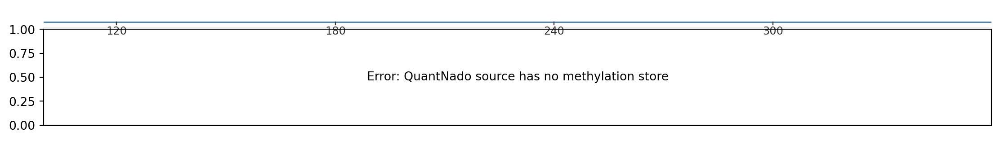
Render variant allele balance from a local QuantNado fixture.
snp_path = QUANTNADO_FIXTURE_DIR / "snp_chr1.zarr"
if has_module("quantnado") and snp_path.exists():
fig = GenomicFigure(track_height=1.2)
fig.axis()
fig.quantnado_variant(
"snp",
dataset_path=str(snp_path),
title="Variant allele balance",
het_color="#756bb1",
hom_alt_color="#d7301f",
marker_size=38,
)
output = fig.plot("chr1:54,721-55,221")
else:
output = unavailable_example_figure("QuantNado variant example", "quantnado")
output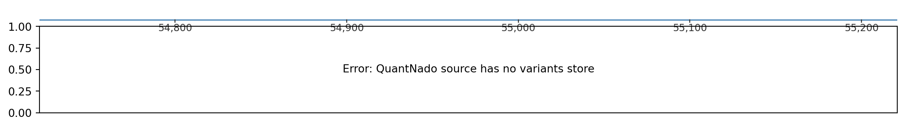
The gallery focuses on rendered examples. Use runtime metadata when you need to inspect every available alias or option field.